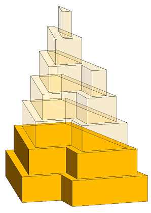

resetGeometry operation
Syntax
resetGeometry()
Description
Resets the geometry to the initial shape's state. Further,
- trim planes are removed,
- shape attributes remain unchanged, but scope and pivot are reset to the initial shape's state,
- generic attributes, which are declared as rule attributes, remain unchanged (see CGA attributes),
- projection matrices remain unchanged.
Related
- i operation
- comp operation
- trim operation
- setupProjection operation
- set operation
- scope attribute
- pivot attribute
Examples
Recursive setbacks
|  |
const maxGFA = 5000
const floorHeight = 10
Example -->
color("#FFAA00")
SetBackRec(0, 0)
SetBackRec(sumGFA, iFloor) -->
resetGeometry()
setback(iFloor*3) {
all : NIL |
remainder : Floor(sumGFA + geometry.area, iFloor)
}
Floor(sumGFA, iFloor) -->
CreateFloor(sumGFA, iFloor)
SetBackRec(sumGFA, iFloor + 1)
CreateFloor(sumGFA, iFloor) -->
set(material.opacity,
case sumGFA > maxGFA : 0.1 else : 1)
t(0, iFloor*floorHeight, 0)
extrude(floorHeight)
Setbacks are applied recursively in order to create a sum of floor areas (gross floor area). Each setback shall be applied wrt. the initial shape. Therefore, the geometry is reset before the setback is applied. Note how shape attributes (here the color) are not changed.
|
Copyright ©2008-2021 Esri R&D Center Zurich. All rights reserved.